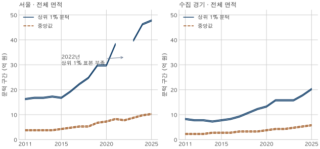
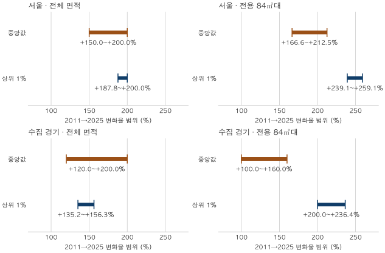

아파트 가격표 읽기 · 고가 거래의 문턱
고가 아파트 기준: 상위 1% 거래 문턱은 얼마나 올랐나?
2011~2025년 서울·수집 경기의 상위 1%·5% 거래 문턱과 중앙값을 같은 구간으로 비교합니다. 전체 면적과 84㎡대의 차이, 해제·직거래 표시와 표본 한계를 함께 확인합니다.
분석 기간 · 2011~2025 · 15개 완결연도 | 자료 기준일 · 2026-10-04
‘상위 1% 아파트는 얼마부터일까?’라는 질문에는 먼저 어느 해, 어느 지역에서 거래된 집을 세었는지가 필요합니다. 서울·수집 경기의 2011~2025년 거래금액을 비교하면 고가 거래의 문턱은 높아졌습니다. 다만 중앙값보다 더 크게 올랐는지는 면적을 맞추는 조건에 따라 다르게 읽힙니다.
상위 1% 문턱은 무엇을 뜻하나요?
거래금액을 낮은 순서로 놓았을 때 99백분위에 해당하는 금액입니다. 상위 5% 문턱은 95백분위, 중앙값은 50백분위입니다. 한 계약에 한 표를 주며, 세대수가 많은 단지에 더 큰 가중치를 주지는 않습니다. 같은 집이 여러 번 거래되면 각각의 계약이 들어갑니다.
분위수는 두 순서값 사이를 보간해 계산할 수 있습니다. 따라서 문턱이 실제 거래 한 건의 금액과 꼭 같지는 않습니다. 같은 금액의 계약이 여럿이면 문턱을 엄격히 넘는 거래의 비중도 정확히 1%가 아닐 수 있습니다. 한국부동산원의 ‘5분위 배율’처럼 상위 20% 평균을 하위 20% 평균으로 나눈 지표와도 다릅니다.
이 글의 모집단은 현재 서울 25구와 이 블로그가 수집하는 경기 36지역의 아파트 매매 계약입니다. 인천과 경기 일부 지역이 빠져 있어 수도권 전체를 대표하지 않습니다. 거래가 없던 집, 현재 매물, 가구가 가진 자산은 세지 않습니다. 고가 아파트의 보편적인 법적 기준을 정하는 표도 아닙니다.
모든 문턱은 폭 0.5억 원의 구간으로 표시했습니다. 표의 ‘16.0~16.5’는 16.0억 원 이상, 16.5억 원 미만이라는 뜻입니다. 가운데값을 실제 분위수로 읽지 마세요. 이 구간은 표시 정밀도의 범위이며 신뢰구간이나 예측 범위가 아닙니다.
2011년과 2025년의 고가 문턱은 얼마나 다른가요?
전체 면적의 상위 1% 문턱은 두 지역 모두 높아졌습니다. 서울은 16.0~16.5억 원에서 47.5~48.0억 원, 수집 경기는 8.0~8.5억 원에서 20.0~20.5억 원입니다. 같은 기간 중앙값도 서울 3.5~4.0억 원에서 10.0~10.5억 원, 경기 2.0~2.5억 원에서 5.5~6.0억 원으로 높아졌습니다.

15개 완결연도를 비교했으며, 두 끝점인 2011년과 2025년 사이의 간격은 14년입니다. 해마다 같은 주택을 추적한 자료가 아니므로 두 끝점의 차이를 고가 아파트 보유자의 투자 성과로 해석할 수는 없습니다.
| 지역·면적 | 연도 | 표본 건수 | 중앙값 | 상위 5% 문턱 | 상위 1% 문턱 |
|---|---|---|---|---|---|
| 서울 · 전체 면적 | 2011 | 54,215 | 3.5~4.0 | 10.0~10.5 | 16.0~16.5 |
| 서울 · 전체 면적 | 2025 | 77,865 | 10.0~10.5 | 30.0~30.5 | 47.5~48.0 |
| 서울 · 전용 84㎡대 | 2011 | 15,676 | 4.0~4.5 | 8.5~9.0 | 11.0~11.5 |
| 서울 · 전용 84㎡대 | 2025 | 25,424 | 12.0~12.5 | 27.5~28.0 | 39.0~39.5 |
| 수집 경기 · 전체 면적 | 2011 | 107,137 | 2.0~2.5 | 5.5~6.0 | 8.0~8.5 |
| 수집 경기 · 전체 면적 | 2025 | 124,405 | 5.5~6.0 | 13.5~14.0 | 20.0~20.5 |
| 수집 경기 · 전용 84㎡대 | 2011 | 32,742 | 2.5~3.0 | 4.5~5.0 | 5.5~6.0 |
| 수집 경기 · 전용 84㎡대 | 2025 | 44,404 | 6.0~6.5 | 13.0~13.5 | 18.0~18.5 |
전체 면적에는 작은 집과 큰 집이 함께 들어옵니다. 고가 거래가 늘었다는 말에는 비슷한 집의 가격 변화뿐 아니라 어떤 면적·지역·단지의 집이 거래됐는지도 섞입니다. 표의 84㎡대는 전용면적이 84㎡ 이상 85㎡ 미만인 계약만 다시 고른 비교로, 이 블로그의 표준 84형보다 좁은 범위입니다(용어집).
84㎡로 맞추면 중앙값과의 차이가 더 뚜렷한가요?
이 비교에서는 그렇습니다. 전용 84㎡대의 상위 1% 문턱 변화율 범위는 서울 +239.1~+259.1%, 수집 경기 +200.0~+236.4%입니다. 같은 면적 중앙값의 범위는 각각 +166.6~+212.5%, +100.0~+160.0%로 두 지역 모두 상위 1% 문턱의 범위와 떨어져 있습니다.
| 지역·면적 | 중앙값 | 상위 5% 문턱 | 상위 1% 문턱 |
|---|---|---|---|
| 서울 · 전체 면적 | +150.0~+200.0 | +185.7~+205.0 | +187.8~+200.0 |
| 서울 · 전용 84㎡대 | +166.6~+212.5 | +205.5~+229.5 | +239.1~+259.1 |
| 수집 경기 · 전체 면적 | +120.0~+200.0 | +125.0~+154.6 | +135.2~+156.3 |
| 수집 경기 · 전용 84㎡대 | +100.0~+160.0 | +160.0~+200.0 | +200.0~+236.4 |
변화율의 하한은 ‘끝 구간 하단 ÷ 시작 구간 상단 − 1’, 상한은 ‘끝 구간 상단 ÷ 시작 구간 하단 − 1’로 계산했습니다. 백분율로 바꾼 뒤 바깥 방향으로 반올림했습니다. 미공개된 정확한 분위값으로 계산한 변화율을 따로 붙이지 않았습니다.

전체 면적의 서울 상위 1% 문턱은 +187.8~+200.0%, 중앙값은 +150.0~+200.0%입니다. 경기 역시 두 범위가 겹칩니다. 이 구간 표만으로 ‘전체 면적에서도 고가 문턱이 중앙값보다 훨씬 빨리 올랐다’고 구별할 수는 없습니다. 범위가 겹친다고 두 변화가 같다고 증명된 것도 아닙니다.
“같은 84㎡라도 다른 동네의 집이 거래됐을 수 있지 않나요?”라는 반론이 남습니다. 면적 한 조건을 맞춰도 입지·연식·층·주택 상태와 단지 구성이 같아지지는 않습니다. 이 표는 면적 조건에 따라 해석이 달라진다는 근거이며, 고가 주택만의 순수한 가격 상승 효과를 분리한 분석은 아닙니다. 상위 5% 문턱도 전체 표에 함께 남겼고, 84㎡대라도 모든 분위의 상승폭을 중앙값과 구별할 수 있는 것은 아닙니다.
해제·직거래를 빼고 15년을 연결하면 더 정확할까요?
같은 제외 규칙을 적어도, 과거에 그 표시가 있었는지부터 달라집니다. 해제 필드는 2020년 2월, 직거래 구분은 2021년 11월부터 관측할 수 있습니다. 그 이전의 공란을 ‘해제도 직거래도 없었다’로 읽으면 안 됩니다.
그래서 본문의 장기 비교는 유효한 금액·면적과 토지임대부 제외 기준을 유지하되, 해제·직거래 표시를 제외 조건으로 사용하지 않았습니다. 이미 해제 표시가 있는 계약도 이 기준에 남습니다. 이는 일관된 관측 범위의 비교를 위한 선택이며, 현재 정상거래 가격을 판단할 때 해제된 계약을 사용하라는 뜻이 아닙니다.
전체 표에는 관측된 해제·직거래를 제외한 결과도 따로 실었습니다. 2011~2019년은 두 필드 미관측, 2020년은 해제 표시가 연중 도입, 2021년은 직거래 표시가 연중 도입된 해입니다. 2022~2025년과 같은 정보 조건의 ‘정제 완료 시계열’로 연결하지 마세요. 같은 연도 안의 두 기준 차이는 해제·직거래와 중위가격 비교에서 더 자세히 설명합니다.
내 후보 아파트의 가격에는 어떻게 적용하나요?
- 분모를 확인합니다. ‘상위 1%’가 그해 거래금액의 문턱인지, 주택 재고나 가구 자산의 기준인지 먼저 적습니다.
- 지역과 면적을 맞춥니다. 서울 전체 면적의 문턱을 경기 84㎡ 후보에 그대로 붙이지 않습니다. 전용면적과 공급면적도 구별합니다.
- 시점과 포함 기준을 확인합니다. 2025년 연간 분포는 지금 살 수 있는 매물 목록이 아닙니다. 해제·직거래 표시와 자료 기준일을 함께 봅니다.
- 개별 조건은 따로 비교합니다. 같은 단지·면적·층·계약 시기의 실제 거래를 확인합니다. 이 글의 문턱이나 변화율만으로 후보의 적정가와 향후 수익률을 정하지 않습니다.
금액은 모두 명목값입니다. 물가를 뺀 구매력 변화가 궁금하다면 물가를 뺀 아파트 가격 비교를 이어 읽으세요. 지수와 이번 계약금액 분위는 대상과 계산법이 다르므로 두 수치를 같은 집의 수익률처럼 섞지 않습니다.
15개 연도의 전체 표
서울·수집 경기 × 전체 면적·전용 84㎡대 × 두 포함 기준의 모든 연도를 남겼습니다. ‘5%/중앙값 배’와 ‘1%/중앙값 배’는 해당 문턱을 중앙값으로 나눈 범위입니다. 상위 집단의 평균금액 배율은 아닙니다. 넓은 표는 표 안에서 가로로 움직여 볼 수 있습니다.
서울 2022년 전체 면적의 상위 1% 문턱과 84㎡대의 상위 5% 문턱은 표시 구간 표본 부족, 84㎡대의 상위 1% 문턱은 상위 꼬리 표본 부족입니다. 두 포함 기준 모두 해당합니다. 표본 부족은 0원이나 거래 없음이 아니며, 다른 연도 값으로 채우지 않았습니다.
서울 · 전체 면적 · 장기 비교 기준 · 2011~2025
| 연도 | 표본 건수 | 중앙값 | 상위 5% 문턱 | 상위 1% 문턱 | 5%/중앙값 배 | 1%/중앙값 배 |
|---|---|---|---|---|---|---|
| 2011 | 54,215 | 3.5~4.0 | 10.0~10.5 | 16.0~16.5 | 2.50~3.00 | 4.00~4.72 |
| 2012 | 40,749 | 3.5~4.0 | 9.5~10.0 | 16.5~17.0 | 2.37~2.86 | 4.12~4.86 |
| 2013 | 67,760 | 3.5~4.0 | 9.5~10.0 | 16.5~17.0 | 2.37~2.86 | 4.12~4.86 |
| 2014 | 85,011 | 3.5~4.0 | 10.0~10.5 | 17.0~17.5 | 2.50~3.00 | 4.25~5.00 |
| 2015 | 119,651 | 4.0~4.5 | 10.0~10.5 | 16.5~17.0 | 2.22~2.63 | 3.66~4.25 |
| 2016 | 109,764 | 4.5~5.0 | 11.5~12.0 | 19.0~19.5 | 2.30~2.67 | 3.80~4.34 |
| 2017 | 104,576 | 5.0~5.5 | 14.0~14.5 | 22.0~22.5 | 2.54~2.90 | 4.00~4.50 |
| 2018 | 81,243 | 5.0~5.5 | 15.5~16.0 | 24.5~25.0 | 2.81~3.20 | 4.45~5.00 |
| 2019 | 74,554 | 6.5~7.0 | 19.0~19.5 | 29.5~30.0 | 2.71~3.00 | 4.21~4.62 |
| 2020 | 81,837 | 7.0~7.5 | 19.0~19.5 | 29.5~30.0 | 2.53~2.79 | 3.93~4.29 |
| 2021 | 42,350 | 8.0~8.5 | 24.0~24.5 | 38.0~38.5 | 2.82~3.07 | 4.47~4.82 |
| 2022 | 12,034 | 7.5~8.0 | 27.0~27.5 | 표시 구간 표본 부족 | 3.37~3.67 | 표본 부족 |
| 2023 | 34,333 | 8.5~9.0 | 24.5~25.0 | 39.5~40.0 | 2.72~2.95 | 4.38~4.71 |
| 2024 | 55,553 | 9.5~10.0 | 28.5~29.0 | 46.0~46.5 | 2.85~3.06 | 4.60~4.90 |
| 2025 | 77,865 | 10.0~10.5 | 30.0~30.5 | 47.5~48.0 | 2.85~3.05 | 4.52~4.80 |
서울 · 전체 면적 · 해제·직거래 표시 제외 · 2011~2025
| 연도 | 표본 건수 | 중앙값 | 상위 5% 문턱 | 상위 1% 문턱 | 5%/중앙값 배 | 1%/중앙값 배 |
|---|---|---|---|---|---|---|
| 2011 | 54,215 | 3.5~4.0 | 10.0~10.5 | 16.0~16.5 | 2.50~3.00 | 4.00~4.72 |
| 2012 | 40,749 | 3.5~4.0 | 9.5~10.0 | 16.5~17.0 | 2.37~2.86 | 4.12~4.86 |
| 2013 | 67,760 | 3.5~4.0 | 9.5~10.0 | 16.5~17.0 | 2.37~2.86 | 4.12~4.86 |
| 2014 | 85,011 | 3.5~4.0 | 10.0~10.5 | 17.0~17.5 | 2.50~3.00 | 4.25~5.00 |
| 2015 | 119,651 | 4.0~4.5 | 10.0~10.5 | 16.5~17.0 | 2.22~2.63 | 3.66~4.25 |
| 2016 | 109,764 | 4.5~5.0 | 11.5~12.0 | 19.0~19.5 | 2.30~2.67 | 3.80~4.34 |
| 2017 | 104,576 | 5.0~5.5 | 14.0~14.5 | 22.0~22.5 | 2.54~2.90 | 4.00~4.50 |
| 2018 | 81,243 | 5.0~5.5 | 15.5~16.0 | 24.5~25.0 | 2.81~3.20 | 4.45~5.00 |
| 2019 | 74,554 | 6.5~7.0 | 19.0~19.5 | 29.5~30.0 | 2.71~3.00 | 4.21~4.62 |
| 2020 | 78,760 | 7.0~7.5 | 19.0~19.5 | 29.0~29.5 | 2.53~2.79 | 3.86~4.22 |
| 2021 | 40,635 | 8.0~8.5 | 23.5~24.0 | 37.5~38.0 | 2.76~3.00 | 4.41~4.75 |
| 2022 | 9,675 | 8.0~8.5 | 28.0~28.5 | 표시 구간 표본 부족 | 3.29~3.57 | 표본 부족 |
| 2023 | 30,827 | 8.5~9.0 | 24.5~25.0 | 39.5~40.0 | 2.72~2.95 | 4.38~4.71 |
| 2024 | 51,015 | 9.5~10.0 | 28.5~29.0 | 45.5~46.0 | 2.85~3.06 | 4.55~4.85 |
| 2025 | 69,280 | 10.5~11.0 | 30.0~30.5 | 47.0~47.5 | 2.72~2.91 | 4.27~4.53 |
서울 · 전용 84㎡대 · 장기 비교 기준 · 2011~2025
| 연도 | 표본 건수 | 중앙값 | 상위 5% 문턱 | 상위 1% 문턱 | 5%/중앙값 배 | 1%/중앙값 배 |
|---|---|---|---|---|---|---|
| 2011 | 15,676 | 4.0~4.5 | 8.5~9.0 | 11.0~11.5 | 1.88~2.25 | 2.44~2.88 |
| 2012 | 11,933 | 4.0~4.5 | 8.5~9.0 | 10.5~11.0 | 1.88~2.25 | 2.33~2.75 |
| 2013 | 21,827 | 4.0~4.5 | 8.0~8.5 | 10.5~11.0 | 1.77~2.13 | 2.33~2.75 |
| 2014 | 26,621 | 4.0~4.5 | 8.0~8.5 | 11.0~11.5 | 1.77~2.13 | 2.44~2.88 |
| 2015 | 38,212 | 4.0~4.5 | 8.5~9.0 | 11.5~12.0 | 1.88~2.25 | 2.55~3.00 |
| 2016 | 35,375 | 4.5~5.0 | 9.5~10.0 | 13.0~13.5 | 1.90~2.23 | 2.60~3.00 |
| 2017 | 33,189 | 5.5~6.0 | 11.5~12.0 | 15.5~16.0 | 1.91~2.19 | 2.58~2.91 |
| 2018 | 25,360 | 5.5~6.0 | 13.0~13.5 | 18.0~18.5 | 2.16~2.46 | 3.00~3.37 |
| 2019 | 22,931 | 7.5~8.0 | 17.0~17.5 | 23.5~24.0 | 2.12~2.34 | 2.93~3.20 |
| 2020 | 24,305 | 8.0~8.5 | 17.5~18.0 | 25.0~25.5 | 2.05~2.25 | 2.94~3.19 |
| 2021 | 11,523 | 10.0~10.5 | 22.0~22.5 | 30.0~30.5 | 2.09~2.25 | 2.85~3.05 |
| 2022 | 2,716 | 10.5~11.0 | 표시 구간 표본 부족 | 상위 꼬리 표본 부족 | 표본 부족 | 표본 부족 |
| 2023 | 10,617 | 10.0~10.5 | 23.0~23.5 | 31.0~31.5 | 2.19~2.35 | 2.95~3.15 |
| 2024 | 18,084 | 11.0~11.5 | 25.5~26.0 | 36.0~36.5 | 2.21~2.37 | 3.13~3.32 |
| 2025 | 25,424 | 12.0~12.5 | 27.5~28.0 | 39.0~39.5 | 2.20~2.34 | 3.12~3.30 |
서울 · 전용 84㎡대 · 해제·직거래 표시 제외 · 2011~2025
| 연도 | 표본 건수 | 중앙값 | 상위 5% 문턱 | 상위 1% 문턱 | 5%/중앙값 배 | 1%/중앙값 배 |
|---|---|---|---|---|---|---|
| 2011 | 15,676 | 4.0~4.5 | 8.5~9.0 | 11.0~11.5 | 1.88~2.25 | 2.44~2.88 |
| 2012 | 11,933 | 4.0~4.5 | 8.5~9.0 | 10.5~11.0 | 1.88~2.25 | 2.33~2.75 |
| 2013 | 21,827 | 4.0~4.5 | 8.0~8.5 | 10.5~11.0 | 1.77~2.13 | 2.33~2.75 |
| 2014 | 26,621 | 4.0~4.5 | 8.0~8.5 | 11.0~11.5 | 1.77~2.13 | 2.44~2.88 |
| 2015 | 38,212 | 4.0~4.5 | 8.5~9.0 | 11.5~12.0 | 1.88~2.25 | 2.55~3.00 |
| 2016 | 35,375 | 4.5~5.0 | 9.5~10.0 | 13.0~13.5 | 1.90~2.23 | 2.60~3.00 |
| 2017 | 33,189 | 5.5~6.0 | 11.5~12.0 | 15.5~16.0 | 1.91~2.19 | 2.58~2.91 |
| 2018 | 25,360 | 5.5~6.0 | 13.0~13.5 | 18.0~18.5 | 2.16~2.46 | 3.00~3.37 |
| 2019 | 22,931 | 7.5~8.0 | 17.0~17.5 | 23.5~24.0 | 2.12~2.34 | 2.93~3.20 |
| 2020 | 23,466 | 8.0~8.5 | 17.5~18.0 | 25.0~25.5 | 2.05~2.25 | 2.94~3.19 |
| 2021 | 11,081 | 10.0~10.5 | 22.0~22.5 | 30.0~30.5 | 2.09~2.25 | 2.85~3.05 |
| 2022 | 2,341 | 10.5~11.0 | 표시 구간 표본 부족 | 상위 꼬리 표본 부족 | 표본 부족 | 표본 부족 |
| 2023 | 9,728 | 10.5~11.0 | 23.0~23.5 | 31.0~31.5 | 2.09~2.24 | 2.81~3.00 |
| 2024 | 16,879 | 11.0~11.5 | 26.0~26.5 | 36.0~36.5 | 2.26~2.41 | 3.13~3.32 |
| 2025 | 22,967 | 12.0~12.5 | 28.0~28.5 | 39.0~39.5 | 2.24~2.38 | 3.12~3.30 |
수집 경기 · 전체 면적 · 장기 비교 기준 · 2011~2025
| 연도 | 표본 건수 | 중앙값 | 상위 5% 문턱 | 상위 1% 문턱 | 5%/중앙값 배 | 1%/중앙값 배 |
|---|---|---|---|---|---|---|
| 2011 | 107,137 | 2.0~2.5 | 5.5~6.0 | 8.0~8.5 | 2.20~3.00 | 3.20~4.25 |
| 2012 | 77,349 | 2.0~2.5 | 5.0~5.5 | 7.5~8.0 | 2.00~2.75 | 3.00~4.00 |
| 2013 | 126,174 | 2.0~2.5 | 5.0~5.5 | 7.5~8.0 | 2.00~2.75 | 3.00~4.00 |
| 2014 | 149,781 | 2.5~3.0 | 5.0~5.5 | 7.0~7.5 | 1.66~2.20 | 2.33~3.00 |
| 2015 | 174,052 | 2.5~3.0 | 5.5~6.0 | 7.5~8.0 | 1.83~2.40 | 2.50~3.20 |
| 2016 | 151,422 | 2.5~3.0 | 6.0~6.5 | 8.0~8.5 | 2.00~2.60 | 2.66~3.40 |
| 2017 | 135,292 | 3.0~3.5 | 6.5~7.0 | 9.0~9.5 | 1.85~2.34 | 2.57~3.17 |
| 2018 | 134,520 | 3.0~3.5 | 7.0~7.5 | 10.5~11.0 | 2.00~2.50 | 3.00~3.67 |
| 2019 | 124,043 | 3.0~3.5 | 8.5~9.0 | 12.0~12.5 | 2.42~3.00 | 3.42~4.17 |
| 2020 | 218,863 | 3.5~4.0 | 8.5~9.0 | 13.0~13.5 | 2.12~2.58 | 3.25~3.86 |
| 2021 | 120,611 | 4.0~4.5 | 10.0~10.5 | 15.5~16.0 | 2.22~2.63 | 3.44~4.00 |
| 2022 | 36,917 | 4.0~4.5 | 10.0~10.5 | 15.5~16.0 | 2.22~2.63 | 3.44~4.00 |
| 2023 | 84,304 | 4.5~5.0 | 10.5~11.0 | 15.5~16.0 | 2.10~2.45 | 3.10~3.56 |
| 2024 | 102,687 | 5.0~5.5 | 12.0~12.5 | 17.5~18.0 | 2.18~2.50 | 3.18~3.60 |
| 2025 | 124,405 | 5.5~6.0 | 13.5~14.0 | 20.0~20.5 | 2.25~2.55 | 3.33~3.73 |
수집 경기 · 전체 면적 · 해제·직거래 표시 제외 · 2011~2025
| 연도 | 표본 건수 | 중앙값 | 상위 5% 문턱 | 상위 1% 문턱 | 5%/중앙값 배 | 1%/중앙값 배 |
|---|---|---|---|---|---|---|
| 2011 | 107,137 | 2.0~2.5 | 5.5~6.0 | 8.0~8.5 | 2.20~3.00 | 3.20~4.25 |
| 2012 | 77,349 | 2.0~2.5 | 5.0~5.5 | 7.5~8.0 | 2.00~2.75 | 3.00~4.00 |
| 2013 | 126,174 | 2.0~2.5 | 5.0~5.5 | 7.5~8.0 | 2.00~2.75 | 3.00~4.00 |
| 2014 | 149,781 | 2.5~3.0 | 5.0~5.5 | 7.0~7.5 | 1.66~2.20 | 2.33~3.00 |
| 2015 | 174,052 | 2.5~3.0 | 5.5~6.0 | 7.5~8.0 | 1.83~2.40 | 2.50~3.20 |
| 2016 | 151,422 | 2.5~3.0 | 6.0~6.5 | 8.0~8.5 | 2.00~2.60 | 2.66~3.40 |
| 2017 | 135,292 | 3.0~3.5 | 6.5~7.0 | 9.0~9.5 | 1.85~2.34 | 2.57~3.17 |
| 2018 | 134,520 | 3.0~3.5 | 7.0~7.5 | 10.5~11.0 | 2.00~2.50 | 3.00~3.67 |
| 2019 | 124,043 | 3.0~3.5 | 8.5~9.0 | 12.0~12.5 | 2.42~3.00 | 3.42~4.17 |
| 2020 | 209,131 | 3.5~4.0 | 8.5~9.0 | 13.0~13.5 | 2.12~2.58 | 3.25~3.86 |
| 2021 | 114,328 | 4.0~4.5 | 10.5~11.0 | 15.5~16.0 | 2.33~2.75 | 3.44~4.00 |
| 2022 | 31,681 | 4.5~5.0 | 10.5~11.0 | 16.0~16.5 | 2.10~2.45 | 3.20~3.67 |
| 2023 | 76,428 | 4.5~5.0 | 10.5~11.0 | 15.5~16.0 | 2.10~2.45 | 3.10~3.56 |
| 2024 | 92,853 | 5.0~5.5 | 12.0~12.5 | 17.5~18.0 | 2.18~2.50 | 3.18~3.60 |
| 2025 | 111,135 | 5.5~6.0 | 13.5~14.0 | 20.0~20.5 | 2.25~2.55 | 3.33~3.73 |
수집 경기 · 전용 84㎡대 · 장기 비교 기준 · 2011~2025
| 연도 | 표본 건수 | 중앙값 | 상위 5% 문턱 | 상위 1% 문턱 | 5%/중앙값 배 | 1%/중앙값 배 |
|---|---|---|---|---|---|---|
| 2011 | 32,742 | 2.5~3.0 | 4.5~5.0 | 5.5~6.0 | 1.50~2.00 | 1.83~2.40 |
| 2012 | 25,690 | 2.5~3.0 | 4.0~4.5 | 6.0~6.5 | 1.33~1.80 | 2.00~2.60 |
| 2013 | 43,316 | 2.5~3.0 | 4.5~5.0 | 6.0~6.5 | 1.50~2.00 | 2.00~2.60 |
| 2014 | 50,457 | 2.5~3.0 | 4.5~5.0 | 6.0~6.5 | 1.50~2.00 | 2.00~2.60 |
| 2015 | 59,294 | 2.5~3.0 | 5.0~5.5 | 6.5~7.0 | 1.66~2.20 | 2.16~2.80 |
| 2016 | 51,136 | 3.0~3.5 | 5.5~6.0 | 7.0~7.5 | 1.57~2.00 | 2.00~2.50 |
| 2017 | 45,394 | 3.0~3.5 | 6.0~6.5 | 8.0~8.5 | 1.71~2.17 | 2.28~2.84 |
| 2018 | 46,819 | 3.5~4.0 | 6.5~7.0 | 9.0~9.5 | 1.62~2.00 | 2.25~2.72 |
| 2019 | 43,955 | 3.5~4.0 | 8.0~8.5 | 10.5~11.0 | 2.00~2.43 | 2.62~3.15 |
| 2020 | 78,681 | 3.5~4.0 | 8.0~8.5 | 11.5~12.0 | 2.00~2.43 | 2.87~3.43 |
| 2021 | 39,967 | 5.0~5.5 | 10.5~11.0 | 14.0~14.5 | 1.90~2.20 | 2.54~2.90 |
| 2022 | 11,670 | 5.0~5.5 | 10.5~11.0 | 14.0~14.5 | 1.90~2.20 | 2.54~2.90 |
| 2023 | 30,573 | 5.0~5.5 | 10.0~10.5 | 14.0~14.5 | 1.81~2.10 | 2.54~2.90 |
| 2024 | 37,229 | 5.5~6.0 | 11.5~12.0 | 15.5~16.0 | 1.91~2.19 | 2.58~2.91 |
| 2025 | 44,404 | 6.0~6.5 | 13.0~13.5 | 18.0~18.5 | 2.00~2.25 | 2.76~3.09 |
수집 경기 · 전용 84㎡대 · 해제·직거래 표시 제외 · 2011~2025
| 연도 | 표본 건수 | 중앙값 | 상위 5% 문턱 | 상위 1% 문턱 | 5%/중앙값 배 | 1%/중앙값 배 |
|---|---|---|---|---|---|---|
| 2011 | 32,742 | 2.5~3.0 | 4.5~5.0 | 5.5~6.0 | 1.50~2.00 | 1.83~2.40 |
| 2012 | 25,690 | 2.5~3.0 | 4.0~4.5 | 6.0~6.5 | 1.33~1.80 | 2.00~2.60 |
| 2013 | 43,316 | 2.5~3.0 | 4.5~5.0 | 6.0~6.5 | 1.50~2.00 | 2.00~2.60 |
| 2014 | 50,457 | 2.5~3.0 | 4.5~5.0 | 6.0~6.5 | 1.50~2.00 | 2.00~2.60 |
| 2015 | 59,294 | 2.5~3.0 | 5.0~5.5 | 6.5~7.0 | 1.66~2.20 | 2.16~2.80 |
| 2016 | 51,136 | 3.0~3.5 | 5.5~6.0 | 7.0~7.5 | 1.57~2.00 | 2.00~2.50 |
| 2017 | 45,394 | 3.0~3.5 | 6.0~6.5 | 8.0~8.5 | 1.71~2.17 | 2.28~2.84 |
| 2018 | 46,819 | 3.5~4.0 | 6.5~7.0 | 9.0~9.5 | 1.62~2.00 | 2.25~2.72 |
| 2019 | 43,955 | 3.5~4.0 | 8.0~8.5 | 10.5~11.0 | 2.00~2.43 | 2.62~3.15 |
| 2020 | 74,661 | 3.5~4.0 | 8.0~8.5 | 11.5~12.0 | 2.00~2.43 | 2.87~3.43 |
| 2021 | 37,585 | 5.0~5.5 | 10.5~11.0 | 14.0~14.5 | 1.90~2.20 | 2.54~2.90 |
| 2022 | 10,130 | 5.0~5.5 | 10.5~11.0 | 14.5~15.0 | 1.90~2.20 | 2.63~3.00 |
| 2023 | 27,933 | 5.0~5.5 | 10.5~11.0 | 14.0~14.5 | 1.90~2.20 | 2.54~2.90 |
| 2024 | 33,721 | 5.5~6.0 | 11.5~12.0 | 15.5~16.0 | 1.91~2.19 | 2.58~2.91 |
| 2025 | 39,789 | 6.0~6.5 | 13.0~13.5 | 18.0~18.5 | 2.00~2.25 | 2.76~3.09 |
자료·계산·출처와 한계 확인하기
자료는 국토교통부 아파트 매매 실거래 자료입니다. 2011년 1월~2025년 12월의 보관 원문과 병합 계약을 독립 대조했습니다. 토지임대부와 금액·면적이 유효하지 않은 계약은 제외합니다. 지역은 현재 단지 정보의 소속을 따르며 서울 25구와 수집 경기 36지역으로 한정합니다.
자료 기준일은 2026년 10월 4일(2026년 9월 계약분까지 수록)입니다. 분석은 2025년 12월에서 끝납니다. 과거 계약일 당시 도착해 있던 자료만을 재구성한 분석은 아니며, 완결 연도도 추후 정정될 수 있습니다.
분위는 R 공식 문서의 Type7과 같은 선형 보간입니다. 정렬한 n개 값에서 0부터 센 위치 h=(n−1)p의 양옆 값을 보간합니다. p는 0.50·0.95·0.99입니다. 원래 금액으로 반올림 없이 계산한 값을 별도로 구한 분위수와 대조했습니다. 순서값을 그대로 고르는 Type1도 민감도로 확인했습니다. 서울 2021년 84㎡대 상위 1%는 두 포함 기준 모두 Type1 값이 Type7의 표시 구간을 벗어났으므로, 계산법을 바꿔도 항상 같은 구간이라고 볼 수 없습니다. Type1 금액을 별도로 공개하지는 않습니다.
분위 지원에는 전체 40거래·10단지 이상뿐 아니라 문턱을 엄격히 넘는 쪽과 밑도는 쪽에 각각 40거래·10단지 이상을 요구했습니다. 표시 구간 안에도 10거래·3단지 이상이 있어야 합니다. 동률은 엄격한 상위 꼬리를 늘리지 않습니다. 0.1억·0.5억·1억 원의 고정 격자를 사전 비교했고, 이 글에는 하나의 0.5억 원 격자만 사용합니다. 지원이 부족한 항목의 이유와 원래 행은 유지했습니다.
정확한 단지수·꼬리 건수·구간 안의 건수·개별 거래와 정확한 분위값은 제공하지 않습니다. 표본 건수는 기존 공개 근거와 결합한 추가 소수 집계 복원 검사를 거쳤습니다. 국소적인 표본 지원과 건수 검증이 모든 비선형 결합이나 외부정보에 대한 재식별 불가능성을 보장하는 것은 아닙니다. 통계적 유의성이나 인과효과를 검정한 결과도 아닙니다.
한국부동산원 주택가격동향조사 설명의 5분위 배율은 상위 20% 평균 ÷ 하위 20% 평균으로 정의됩니다. 이 글의 95·99백분위 문턱이나 문턱/중앙값 배율과 다릅니다. 공식 정의 확인일은 2026년 10월 10일입니다.
모든 구간·표본 건수·표본 부족 여부는 공개 파일(JSON)에서 확인할 수 있습니다. 분석·집필: 파파펭귄 (Nobot Kang). 에이전트로 원천 대조·계산·차트·초안 검토를 보조했습니다.